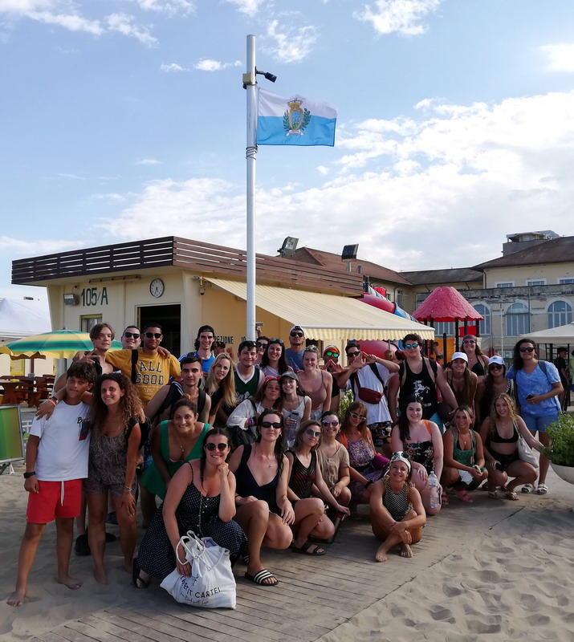
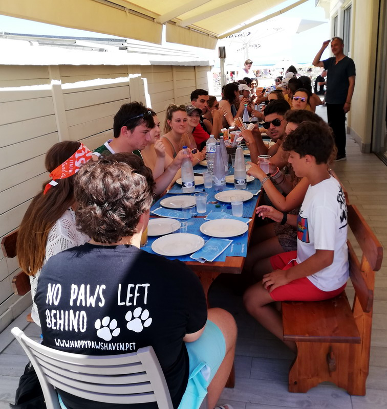
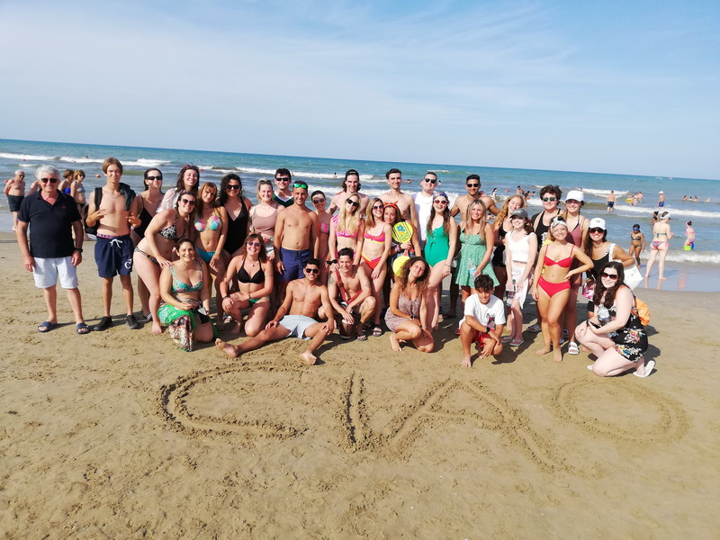
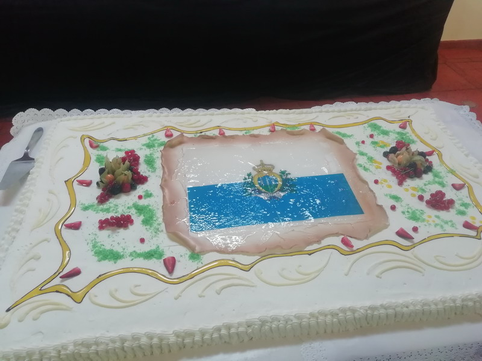
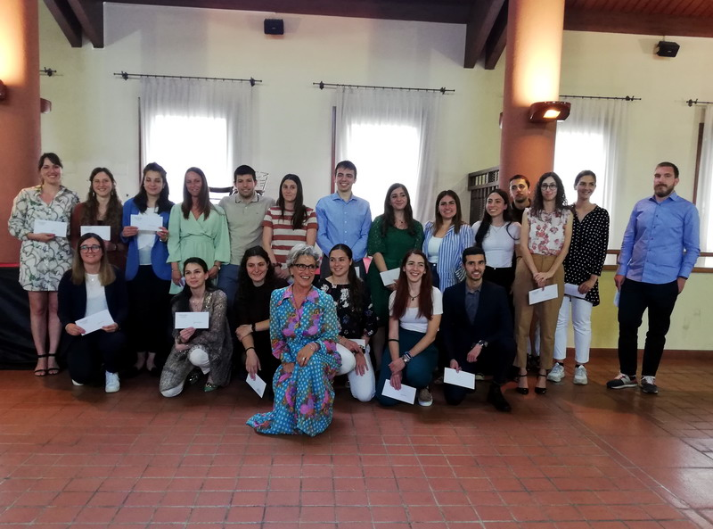

Anche quest'anno l'Associazione «Gente del Titano» della comunità di Rimini ha avuto il piacere di offrire una giornata al mare ai ragazzi della 40ª edizione dei Soggiorni Culturali e ai loro accompagnatori, presso il Bagno 105.
Dopo il pranzo al ristorantino, sono proseguite le attività in spiaggia e i momenti di relax iniziati al mattino.
Nel tardo pomeriggio, i partecipanti sono poi ripartiti alla volta di San Marino.



Domenica 29 Maggio 2022 si è svolto il nostro consueto pranzo annuale presso il ristorante Casa Zanni Via Casale n° 213 47826 Villa Verucchio.

Nel contesto della assemblea generale sono state rinnovate le cariche elettive valide per il triennio 2022-2025.
Sempre durante l'evento sono state consegnate 24 borse di studio agli studenti meritevoli che hanno ottenuto il titolo nel triennio 2019-2021.
